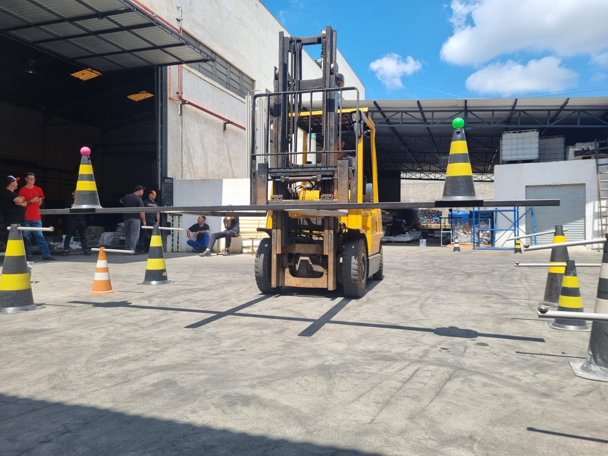
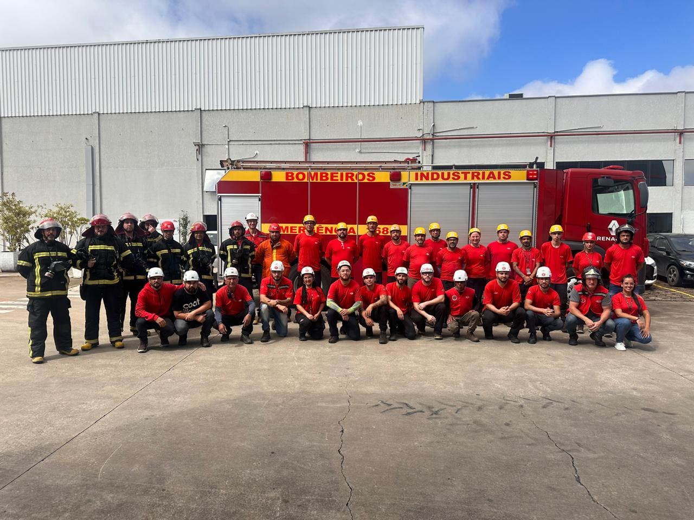
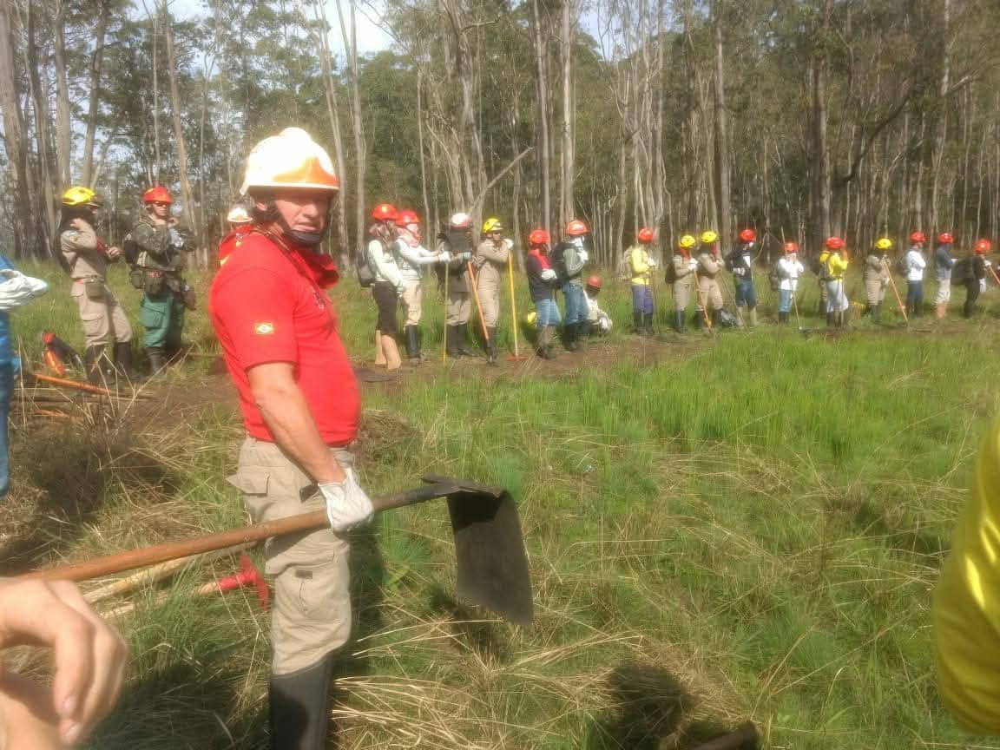
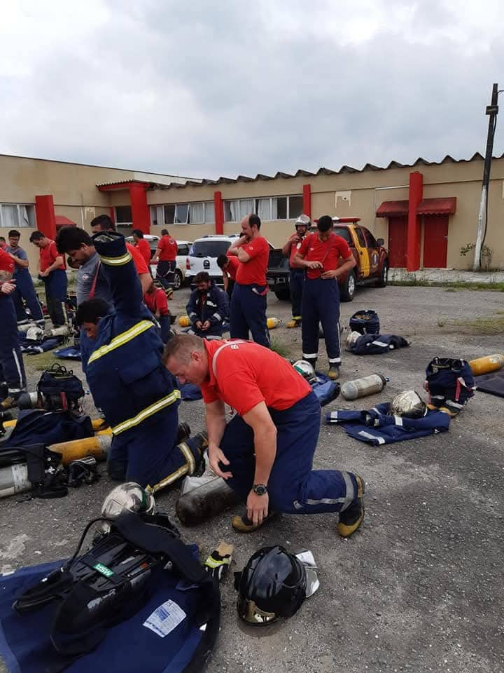
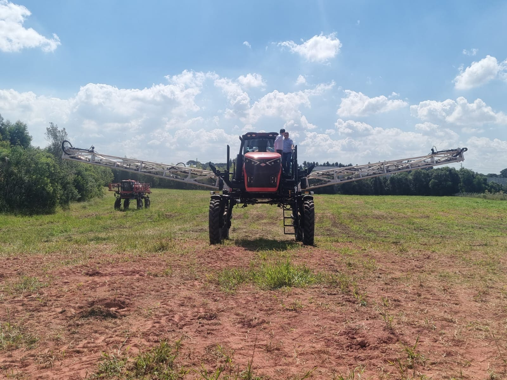
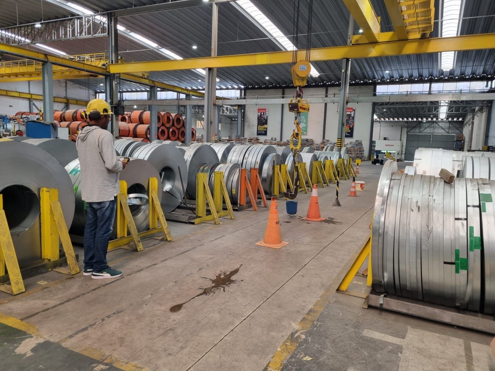
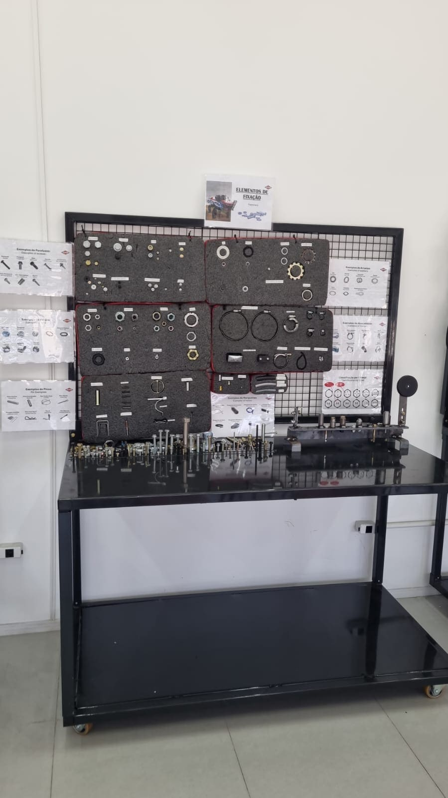
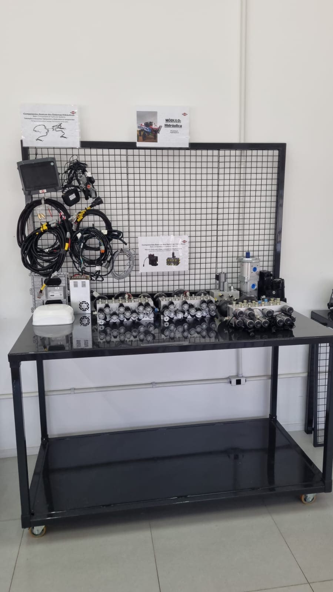
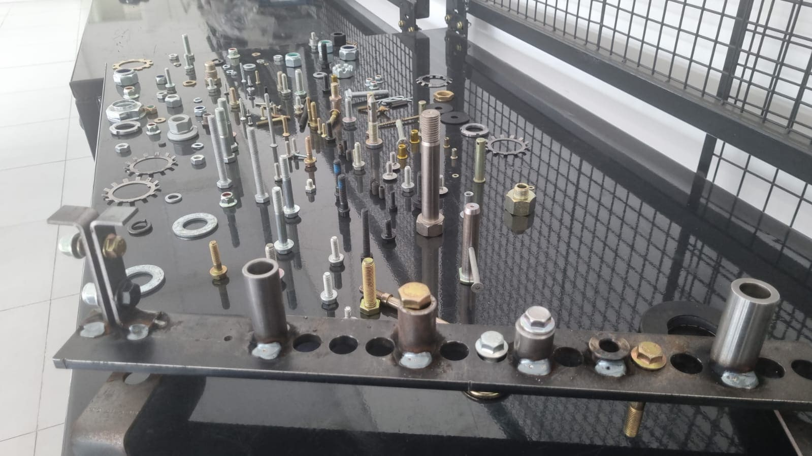

1. Segurança e Normas
- Técnico em Segurança do Trabalho
- Instrutor e Supervisor em Espaço Confinado
- Instrutor e Supervisor de Trabalho em Altura
- Instrutor e Supervisor de Produtos Perigosos
- Instrutor de Treinamento Industrial

São José dos Pinhais – PR | Treinamentos industriais e resposta a emergências
Soluções práticas para prevenção de acidentes, qualificação de equipes e prontidão operacional. Atuação voltada à conformidade, desempenho e continuidade segura das operações industriais.
Nadir Aparecido dos Santos, 48 anos, casado, pai de 1 filho e natural do interior do Paraná. Atua com disciplina operacional, liderança em campo e compromisso com a preservação da vida.
Seus treinamentos fortalecem a cultura de prevenção, reduzem riscos e elevam a maturidade técnica das equipes em rotinas críticas e cenários de emergência.
Agendar conversa técnica
Capacitações estruturadas para atender demandas industriais, operacionais e de emergência.
Registros de atividades práticas em segurança industrial, resposta a emergência e operação de equipamentos.




Ambiente de treinamento prático que fortalece aprendizagem, padronização e confiança operacional.



Planejamento e execução de treinamentos industriais com foco em segurança operacional e conformidade técnica.
Coordenação de equipe para atendimento rápido e eficiente em eventos esportivos de alta demanda.
Gestão do Plano de Auxílio Mútuo com integração entre empresas e agentes de resposta para emergências regionais.
Liderança de brigada com foco em prevenção, combate a incêndio e protocolos de evacuação.
Disponível para treinamentos, consultorias, formação de brigadas e projetos de segurança do trabalho.
Localização: São José dos Pinhais – PR
Atendimento técnico com planejamento, responsabilidade e alinhamento às necessidades da sua operação.